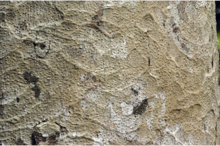
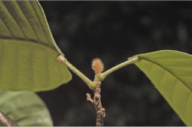
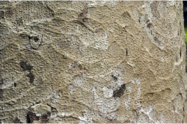
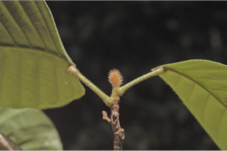
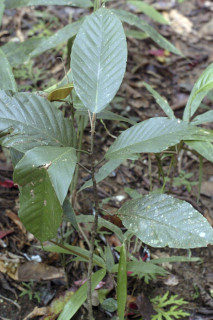
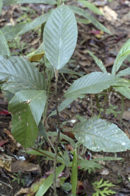

| Leaves : | Leaves simple , alternate , spiral and clustered at twig ends; stipules in younger stages lanceolate , to 5.5 cm long, densely stellate tomentose ; petiole to 3 cm long, slightly swollen at base, stellate pubescent in young trees ; lamina in mature trees 8-12 x 4-6 cm elliptic or narrow ovate , apex acute or slightly acuminate , base rounded , margin entire , subcoriaceous , glabrous ; midrib slightly canaliculate above; secondary_nerves straight, nearly parallel ; tertiary_nerves obliquely_percurrent . |

 





 
